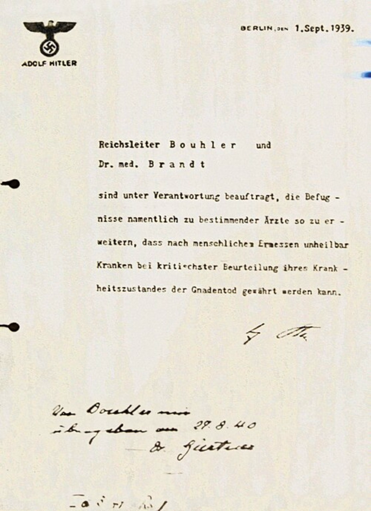

Aktion T4 : des vies que le régime nazi a voulu effacer
Des femmes, des hommes et des enfants ont été assassinés parce que le régime nazi les jugeait indignes de vivre. Leurs noms et leurs histoires méritent d’être connus.

Le document qui couvrait les assassinats. Hitler chargeait Philipp Bouhler et le médecin Karl Brandt de donner à certains médecins le pouvoir de provoquer ce qu’il appelait une « mort de grâce » pour des patients jugés incurables. Cette expression dissimulait un programme d’assassinat. La lettre fut signée à l’automne 1939 puis antidatée au 1er septembre 1939. Reproduction du document historique fourni, identification : Archives fédérales allemandes et United States Holocaust Memorial Museum.
Qu’était l’Aktion T4 ?
L’Aktion T4 était un programme secret d’assassinat organisé par le régime nazi. Son nom renvoie à la Tiergartenstraße 4, l’adresse berlinoise de ses services de coordination. À partir de 1939, le régime a ciblé notamment des personnes handicapées physiques ou intellectuelles et des patients internés en psychiatrie dans le Reich allemand et les territoires annexés.
Les dirigeants nazis prétendaient que ces personnes représentaient une charge pour la société et voulaient les exclure selon leur idéologie raciste et eugéniste. Le mot « euthanasie » servait à masquer des meurtres décidés sans le consentement des victimes. Une maladie, un handicap, un séjour dans un établissement de soins ou un diagnostic inscrit dans un dossier ne retirait à personne son humanité.
Comment les meurtres étaient-ils organisés ?
Les établissements de soins devaient transmettre des renseignements sur leurs patients. Des médecins et des administrations participaient à leur sélection. Des bus emmenaient ensuite les personnes retenues, parfois par des établissements intermédiaires, vers six centres de mise à mort : Brandenburg, Grafeneck, Hartheim, Pirna-Sonnenstein, Bernburg et Hadamar.
Dans ces centres, les victimes étaient assassinées dans des chambres à gaz au monoxyde de carbone. Les familles recevaient souvent des lettres et des certificats donnant de fausses dates, de faux lieux ou de fausses causes de décès. Cette tromperie visait à dissimuler les crimes.
Plus de 70 000 personnes ont été assassinées dans les six centres de l’Aktion T4 entre janvier 1940 et août 1941. Ce chiffre concerne la phase centralisée du programme : les meurtres de patients ont continué sous d’autres formes après son arrêt officiel.
Après août 1941, les crimes ont continué
Face aux protestations, la phase centralisée de l’Aktion T4 a été officiellement arrêtée le 24 août 1941. Cela n’a pas mis fin aux assassinats. Dans des établissements, des patients ont encore été tués par médicaments, injections ou privation délibérée de nourriture. Les victimes de ces crimes ultérieurs ne doivent pas être confondues avec le chiffre des 70 000 personnes tuées pendant la phase centralisée.
Leurs visages, leurs vies
Ces parcours montrent les personnes derrière les dossiers. Les deux autoportraits et la photographie affichés ci-dessous sont des œuvres de leurs autrices. Les photographies familiales de quatre autres personnes sont conservées et présentées par le mémorial de Hadamar.
Elfriede Lohse-Wächtler, autoportrait de 1931. Domaine public · Wikimedia Commons.
Elfriede Lohse-Wächtler · 40 ans
Née à Dresde le 4 décembre 1899, Elfriede voulait devenir peintre malgré l’opposition de son père. Elle étudia à l’école des arts appliqués de Dresde, fréquenta des artistes de la Sécession et épousa en 1921 le chanteur Kurt Lohse. À Hambourg, elle vécut de sa peinture dans des conditions souvent difficiles. Lors d’un séjour à l’hôpital de Friedrichsberg, elle dessina les personnes autour d’elle. Cette série de portraits attira l’attention de la critique en 1929.
Revenue à Dresde, elle fut hospitalisée en 1932 puis transférée à Arnsdorf. Elle continua quelque temps à dessiner et demanda à retrouver sa liberté. En 1935, elle fut stérilisée de force, malgré ses protestations et celles de sa famille. Le 31 juillet 1940, elle fut transportée d’Arnsdorf au centre de mise à mort de Pirna-Sonnenstein et y fut assassinée au monoxyde de carbone. Ses dessins ont survécu à ceux qui ont voulu effacer sa vie.
Ida Maly, autoportrait de 1928. Domaine public · Wikimedia Commons.
Ida Maly · 46 ans
Née à Vienne en 1894 et élevée à Graz, Ida Maly consacra sa vie à la peinture et au dessin. Elle étudia et travailla à Vienne, puis chercha de nouvelles inspirations à Munich, Berlin et Paris. Elle gagnait difficilement sa vie en copiant des œuvres anciennes et en réalisant des travaux graphiques. Son regard s’ouvrit au Jugendstil, à l’expressionnisme, à l’Art déco et à la Nouvelle Objectivité.
À partir de 1928, elle fut internée dans l’établissement psychiatrique Am Feldhof, à Graz. Même privée de liberté, elle continua à créer et dessina d’autres patients avec attention. En février 1941, elle fut transférée au centre de mise à mort du château de Hartheim, en Autriche, où elle fut assassinée. Son œuvre conserve aujourd’hui la trace de son talent et du regard humain qu’elle portait sur les autres.
Photographie de Josef August Senge · Bernhard Schulte, CC BY-SA 4.0, via Wikimedia Commons. Image non modifiée.
Josef August Senge · 35 ans
Josef naquit le 30 mai 1906 à Meschede. Il grandit dans une famille de cinq enfants. Son père travaillait en usine et sa mère avait été employée comme domestique. Après l’école, Josef travailla lui aussi dans une usine. Il était un fils, un frère et un ouvrier, avec une histoire bien plus vaste que le dossier médical qui l’a ensuite désigné.
À 22 ans, il fut admis dans l’établissement psychiatrique de Warstein. Le 27 juin 1941, il fut transféré à Herborn, qui servait d’étape vers Hadamar. Le 17 juillet 1941, il y fut conduit et assassiné dans la chambre à gaz peu après son arrivée. Un mémorial devant son ancien domicile à Meschede rappelle aujourd’hui son nom.
Rosel Weinstein · 47 ans
Rosel Wolf naquit le 4 juillet 1893 à Schlüchtern. En 1912, elle épousa Leopold Weinstein. Ils eurent deux enfants, Erich en 1913 et Margrit en 1921, et vécurent à Eschwege. Une photographie la montre avec eux vers 1921 : une mère auprès de ses enfants, avant les persécutions et les séparations.
À partir de 1933, les humiliations subies par sa famille juive la blessèrent profondément. Après plusieurs séjours de soins, Rosel fut placée dans un établissement de Krefeld-Königshof. En janvier 1940, elle écrivit encore à sa sœur Anna. Le 12 février 1941, elle fut transférée à Düsseldorf-Grafenberg, puis conduite deux jours plus tard à Hadamar avec 42 autres patients juifs. Elle fut assassinée dans la chambre à gaz le 14 février 1941.
Sa photographie avec ses enfants est visible dans la biographie publiée par la Gedenkstätte Hadamar.
Rosa Maria Schweikert · 48 ans
Née Rosa Maria Scherzinger le 5 mai 1892 à Nußbach, elle était la fille de Maria et Roman Scherzinger. En 1919, elle épousa Gustav Schweikert et donna naissance à leur fils Friedrich Karl. Leur fille, née en 1922, mourut à peine un mois plus tard. Rosa connut plusieurs périodes de soins, la séparation d’avec son mari, puis la perte de ses parents. Son fils fut accueilli par sa sœur.
Rosa revint vivre un temps chez ses parents. Elle fut ensuite de nouveau hospitalisée à Reichenau, où sa nièce lui rendit visite. En 1941, elle fut déplacée à Wiesloch, établissement intermédiaire du programme T4. Le 2 avril 1941, elle fut conduite à Hadamar avec au moins 76 autres personnes et assassinée à son arrivée.
Son portrait est conservé dans la biographie publiée par la Gedenkstätte Hadamar.
Rosa Schillings · 42 ans
Rosa Antonette Hubertine Droste naquit le 18 mars 1899 à Würselen dans une famille de commerçants. Elle grandit avec trois frères. En 1925, elle épousa Johann Josef Schillings et devint mère d’Inge, puis de Gregor. La famille partit à Bornéo pour le travail de son mari. Après la mort de celui-ci en 1930, Rosa rentra en Allemagne avec ses enfants. Inge mourut de la malaria en 1931.
Éprouvée par ces deuils, Rosa connut des difficultés psychiques et fut placée dans plusieurs établissements. À Galkhausen, elle critiquait ouvertement le régime nazi. Le 2 mai 1941, elle fut emmenée à Hadamar avec plus de cent autres patients et assassinée le jour même dans la chambre à gaz. Sa famille reçut plus tard une fausse annonce affirmant qu’elle était morte d’une leucémie le 26 mai.
Une photographie de Rosa avec ses enfants est présentée par la Gedenkstätte Hadamar.
Maria Elisabeth Breiderhoff · 34 ans
Née le 28 mars 1907 à Waldbröl, Elisabeth vivait avec des crises d’épilepsie depuis l’enfance. À la fin des années 1930, elle se trouvait dans l’établissement de Süchteln-Johannistal. Le 11 juin 1941, elle fut transférée à Galkhausen. Ses proches demandèrent aussitôt où elle se trouvait et pourquoi elle avait été déplacée.
Le 22 juillet, sa famille apprit qu’elle avait été envoyée vers une destination inconnue. Son père tenta de la retrouver et de lui rendre visite. Il reçut finalement un acte affirmant qu’elle était morte à Bernburg le 30 juillet après une crise d’épilepsie. Tout était mensonger : Elisabeth avait été emmenée à Hadamar et assassinée le 22 juillet 1941. Sa famille avait cherché à la protéger jusqu’au bout.
Une photographie d’Elisabeth avec sa famille est conservée par la Gedenkstätte Hadamar.
Chaque nom désigne une personne qui avait une famille, une histoire et une place dans le monde. Raconter ces vies, c’est refuser que les victimes soient réduites à un diagnostic ou à un chiffre.